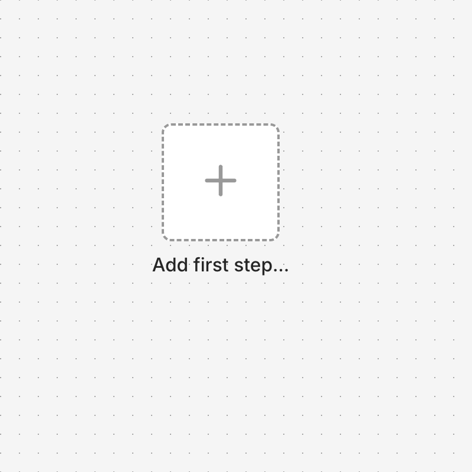
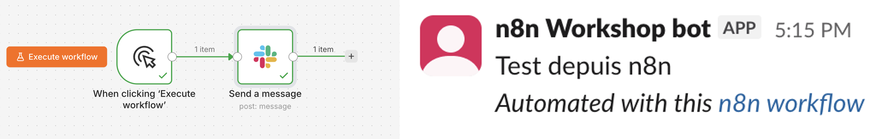
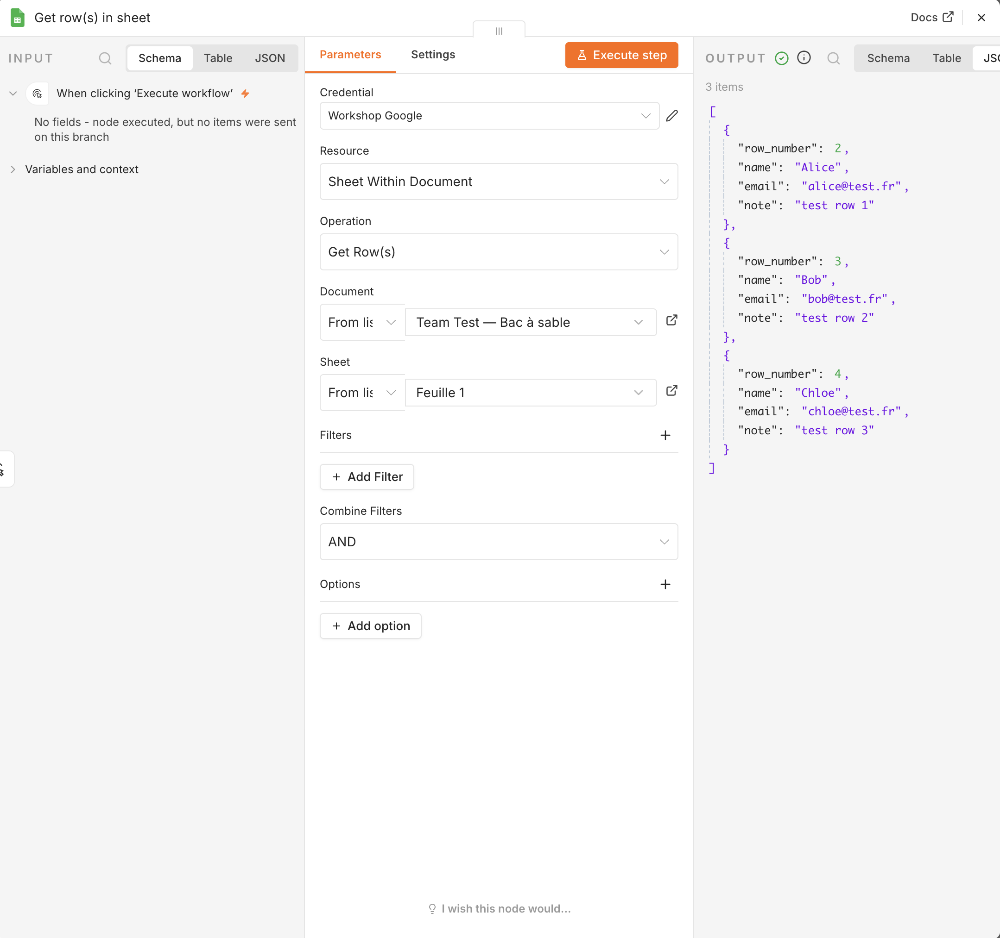

Ex 1.0 — Setup Sprint ⚙️
Goal: your environment works, and you have sent your first message from n8n.
Time: 20 minutes. Faster if nothing fights back.
Why a 'setup' exercise?
Connecting accounts is the first real obstacle in every automation project. So we treat it as an exercise, not as a chore. Checkpoints, hints, and then you move on.
CP0 — Join the class Slack workspace
- Open the invite link: join.slack.com/t/epita-n8n/shared_invite/zt-4djjazkr6-8qzp2OhhZo2r3ExTH7mOCA
- Create your account (any name is fine), join the
Epita-n8nworkspace. - Go to the
#test-seance-1channel — that's where the credential links for CP2–CP4 below get posted, and where your bot messages land.
✅ Done when: you can see #test-seance-1 in your sidebar. → CP0.
CP1 — Logged into your instance
- Open
http://localhost:5678— the n8n you started in 1.0 — Install n8n (Docker). - Log in with the owner account you created there.
- You should see the empty n8n canvas.

✅ Done when: you see "Start from scratch" or an empty canvas. → CP1.
Hint 1
Owner account not accepted? Check you are using the same email/password you set when
n8n first opened. There is no "forgot password" on a fresh local instance — if you are
truly stuck, stop the container and delete the volume to start over:
docker compose down -v && docker compose up -d. You lose nothing, you have not built
anything yet.
Hint 2
Still blocked after 2 tries? Raise your hand.
Where your credentials come from
Three credentials, given to you in class — not pre-installed, because every student runs their own local n8n with nothing shared by default.
Slack and Google Sheets are class-shared accounts — one value for everyone, both in this one link:
privatebin.net/?e8981599c2dd4a14#AjwdJPyQQGFexj4FVNpFG2TjiNmNdTYFgkuBGx5dnmDd
The password is given out loud in class, not written anywhere.
The LLM key is yours alone — one per student, $1 cap each, sent to you personally as a Slack DM, not posted in a channel. See CP4.
Open the link(s) right as you reach each part of the exercise below, copy the value straight into your own local n8n, now. Do not screenshot or save them anywhere else, and do not reuse them in your own projects — they get shut off once the module ends.
CP2 — Your first workflow: a Slack message
We build the smallest possible workflow: 2 nodes, started by hand.
- Click + Add first step → search
Manual Trigger→ add it. - Click the + on the right of the trigger → search
Slack→ choose Send a message. - In the Slack node: Credential field → Create new credential. Choose Slack API,
paste the Bot token from the class credentials link above (
SLACK_BOT_TOKEN). At the top, rename the credential to exactlyWorkshop Slack— every later exercise and skeleton you import expects that exact name. Save. - Channel:
#test-seance-1· Message: anything you want. Everyone can read it. - Click Execute workflow at the bottom.

✅ Done when: your message appears in #test-seance-1. → CP2.
Hint 1
Slack node red? Open it, read the first line of the error (reflex 1 on your survival card). "Channel not found" means the channel name is wrong, or the bot was never invited to it — ask.
Hint 2
"Invalid auth" on save? You likely copied the token with a trailing space, or copied the
wrong one (it starts with xoxb-). Re-open the class credentials link, copy again.
CP3 — Google Sheets answers
- New workflow (menu → New workflow).
- Add
Manual Trigger, then aGoogle Sheetsnode → Get row(s) in sheet. - Credential field → Create new credential. Choose Google Sheets Service Account,
paste the service-account email (
GOOGLE_SA_EMAIL) and private key (GOOGLE_SA_PRIVATE_KEY) — or the full JSON if your node only has one field — from the same class credentials link. Rename the credential to exactlyWorkshop Google— same reason as Slack. Save. - Document:
FoodFleet — Shared Sandbox· Sheet:Sheet1. - Execute workflow. The OUTPUT panel should show a few test rows.

✅ Done when: you see data in OUTPUT. → CP3.
Hint 1
Document missing from the list, or a permission error? The service account needs to be
shared on the sheet as an Editor — that is already done on the class copy. Re-check you
pasted the whole JSON key, including the outer { }.
CP4 — Add your LLM credential
The LLM key is different from the other two: it's yours alone, not shared with the class. Instead of one link for everyone, you get a Slack DM, sent to you personally, with one individual API key capped at $1.
- Check your Slack DMs for the link. Open it, copy the key.
- Left menu → Credentials → Create credential → OpenRouter.
- Paste your claimed API key. Rename the credential to exactly
Workshop LLM— same reason as the other two. Save. - Left menu → Credentials again. You should now see three:
Workshop Slack,Workshop Google,Workshop LLM.
✅ Done when: all three are there. Do not edit or delete them — you need all three for the rest of the module. → CP4. Go to Ex 1.1.
Default model: openai/gpt-4o-mini
Use this model for the exercises unless told otherwise — it's cheap and its tool-calling works reliably with n8n's AI Agent node. You can try other models later once you understand the trade-offs (Séance 2 covers this).
Finished early?
Help a neighbour (rule 1: do not touch their keyboard). Or explore the canvas: double-click a node and look at its options. You cannot break anything. It is your own local instance.